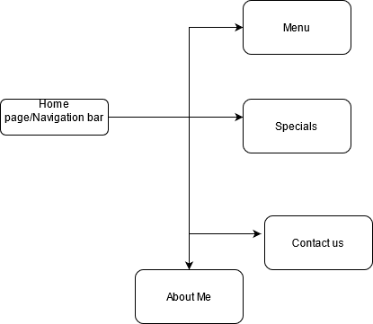

Sean Ng JC443053
To improve the business of Petite Treats by attracting more young families and people. The website should generate more sales by increasing the influence of Petite Treats to a much wider online audience. It will also
provide details on ongoing specials as well as a menu with pictures, hoping to generate more attention that way.
As other advertising for the shop will be consistent for the next 2 month period, any increase in sales will be attributed to the website. At the end of the 2 month period, sales and number of unique customers will be counted and compared to previous months.
The site is primarily targeted at young locals between ages 17-35 that might be interested in grabbing some pastries/buns throughout the day. However, this website also aims to share promotions and sales events with all current customers.
